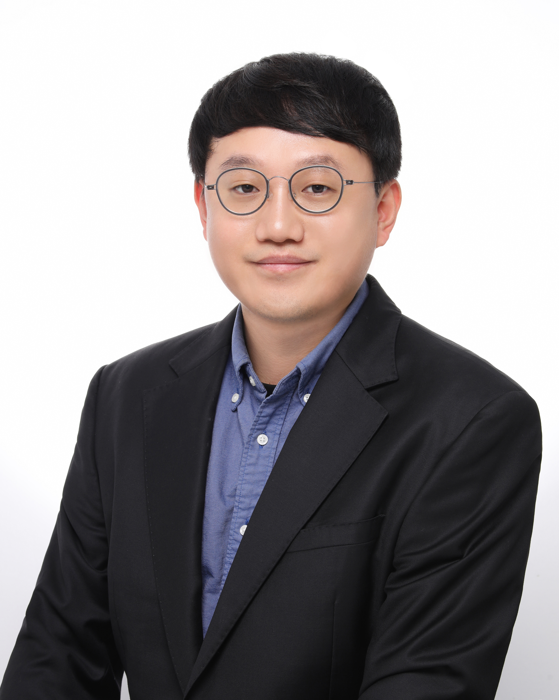

NEWS
뉴스 영상편집
SBS 뉴스 영상편집 작업을 기록합니다.

2014년부터 SBS A&T에서 뉴스 영상편집기자로 일하고 있습니다. 뉴스 스토리에 적합한 영상과 음향을 선택하고, 이를 편집하여 하나의 완성된 콘텐츠로 만듭니다.
같은 영상도 어떤 장면을 앞뒤에 놓고, 어떤 소리를 함께 쓰느냐에 따라 다르게 전달될 수 있습니다. 편집 과정에서 사건의 맥락이 빠지거나 장면의 의미가 달라지지 않도록 고민합니다.
중앙대학교 대학원에서 방송영상뉴미디어를 전공하고, 「영상편집기자들의 뉴스 제작 경험과 개선 방안 인식」을 주제로 석사학위 논문을 썼습니다. 해당 연구는 한국방송학회가 발행하는 『한국방송학보』에도 게재됐습니다. 현장에서 경험한 편집 과정과 고민을 연구와 글로도 기록하고 있습니다.
한국영상편집기자협회 회장으로 활동하며, 회원들이 뉴스 제작 경험을 나누고 함께 배울 수 있는 교육과 교류의 자리를 마련하고 있습니다.
비릴리오의 드로몰로지와 피크노렙시 사유를 중심으로